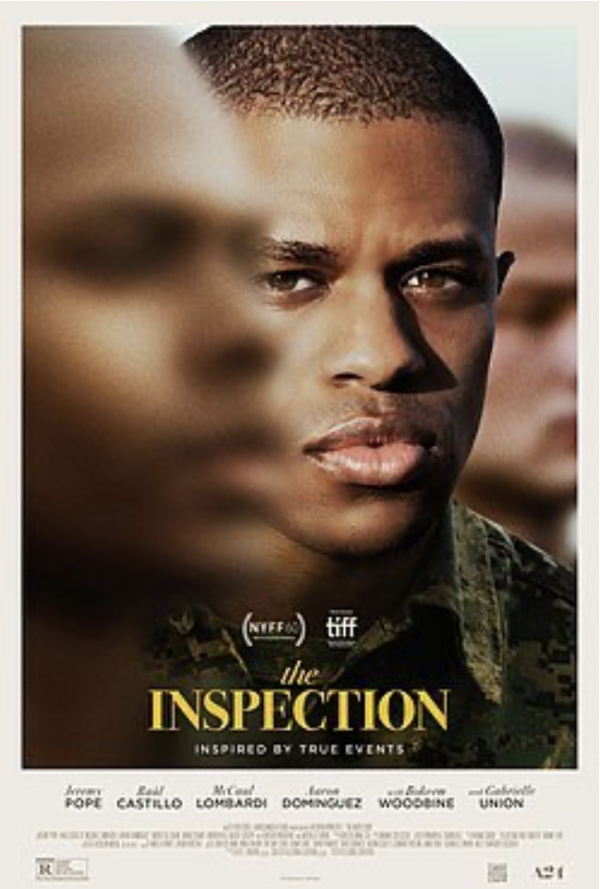

Movie poster for The Inspection
I have been trying to see which producers that are doing the most celebrated work in #queercinema and (outside the realm of coming-of-age narratives, which are the easiest because they can survive solely on “discovering yourself” arc, without much else). And I realised that A24 (est. 2012), produced two of the most critically acclaimed films to date, Moonlight (2016) by Barry Jenkins and The Inspection (2022), debut feature by Elegance Bratton. Both featuring black men struggling to come to terms with their sexuality. And the word struggle is key in that regard. Both films are frighteningly spectacular narratives of loneliness. Never were characters stripped away of any joy or pleasure that is remotely related to their bodies or sexuality (compare Jessie Smollett’s B-Boys Blues (2021), less nuanced but there is plenty of pleasure and display of desire even for oppressed black men).
It is really frightening (and I don’t use that term lightly) to see that the same producer produced two films where there is not one single intimate scene between black men (Moonlight’s only sex scene is a wet dream of heterosexual sex, and The Inspection, has the exact same treatment, but this time, although it is between two men, it is immediately interrupted). It is incomprehensible. And what is even more incomprehensible is how the two are celebrated for being a breakthrough in queer cinema representing black people. For me, the spectacle of representation is as superficial as the idea itself. What counts is not the mere presence of a black body on screen, but rather what this black body is “allowed” to do on screen.
I think a lot about what it means to tell a story of gay men, who are not white, who have different notions of masculinity, and different social scores, and to me it seems there is very little to see or to celebrate.
In Europe, gay-themed films the past ten years or so ran on nothing else but on refugee porn, German, Finnish, Spanish,…etc. & if not that it’s historical stories of misery porn or worse a parody of how promiscuous and flighty gay men are.
Can coloured bodies ever have any kind of joy? Or are we forever consigned to misery porn or spectacles of violence?